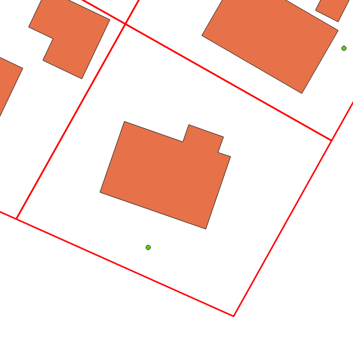
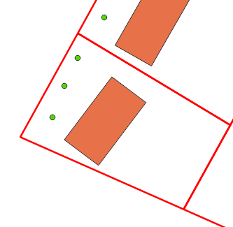
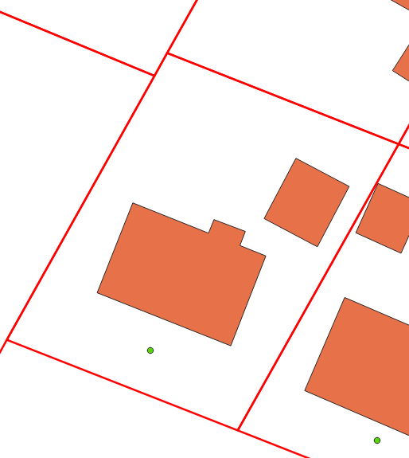
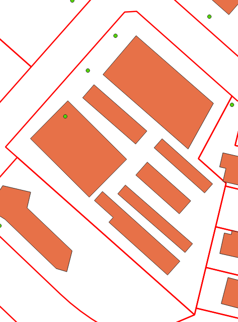
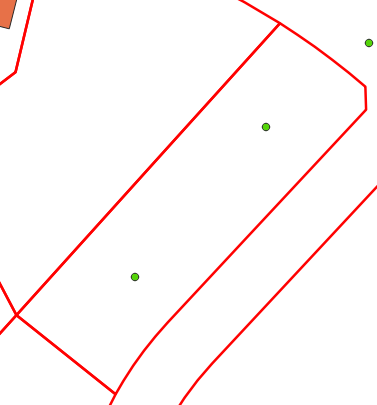

Step 2: Parcel Relationship Calculation#
For reference the descriptions on this page cover the code in issue_flagging.py
Once cleaned the data’s relationship to the parcel data must be calculated. This relationship is based on the count of address points and building footprints contained in a given parcel. This page describes the different relationship types and then shows how they are calculated within the matching scripts.
Relationship Types#
One to One#
The most basic relationship type where in a given single parcel there is only one address point and one building footprint.
{kind=link}
This is considered the ideal scenario and steps are taken to create as many one to one relationships as possible. For example, flagging non-addressable outbuildings during the data cleaning phase allows us to exclude those building polygons from the parcel relationship calculation.
Many to One#
In this relationship there are many address points and a single building footprint contained in a single parcel
{kind=link}
One to Many#
In this relationship type there is one address point but many building footprints contained in a single parcel.
{kind=link}
Many to Many#
This is the most complicated relationship type where more than one address point and more than one building footprint are contained in a single parcel.
{kind=link}
No Linked Building#
This relationship is assigned to address points in cases where one or more are present in a parcel but no building footprint is present.
{kind=link}
Unlinked#
This relationship is assigned to address points and building polygons when no underlying parcel is present. This can be data in a region that does not have a parcel fabric available or data within the extent of a parcel fabric that falls into a gap or area with no polygons. This is considered to by the least ideal scenario as there is limited information to help inform where is correct linkage is if one exists.
Note
While some methods have been looked at to deal with regions without an available parcel fabric to date none has proven to be capable of providing sufficiently accurate results to be flagged for implimented.
Relationship Calculation Process#
The code that calculates the relationship for each address point and building polygon goes through the following steps:
The address point and building polygon data were linked during the address cleaning phase. These cleaned datasets are loaded into geodataframes.
Using pandas groupby functionality both the address points and building polygons are grouped by the parcel linkage field to get counts of each for every parcel ID. Note that building classified as non-addressable outbuildings are not included in these counts.
The parcel relationship is then calculated based off of the counts created in step 2. These values are assigned to the address points
The address data is exported to the project geopackage.
def relationship_setter(parcel_ident, ap_parcel_counts, bf_parcel_counts):
'''Returns the parcel relationship type for the given record based on the counts of the parcel linkages in the bf and ap datasets'''
if isnan(parcel_ident):
return 'unlinked'
bf_indexes = bf_parcel_counts.index.tolist()
if not parcel_ident in bf_indexes:
return 'no_linked_building'
ap_count = ap_parcel_counts[ap_parcel_counts.index == parcel_ident].tolist()[0]
bf_count = bf_parcel_counts[bf_parcel_counts.index == parcel_ident].tolist()[0]
if (ap_count == 1) and (bf_count == 1):
return 'one_to_one'
if (ap_count == 1) and (bf_count > 1):
return 'one_to_many'
if (ap_count > 1) and (bf_count == 1):
return 'many_to_one'
if (ap_count > 1) and (bf_count > 1):
return 'many_to_many'
else:
print(ap_count)
print(bf_count)
sys.exit()
# Load in datasets
addresses = gpd.read_file(ap_path, layer=ap_lyr_nme, mask=aoi_gdf)
footprints = gpd.read_file(bf_path, layer=bf_lyr_nme, mask=aoi_gdf)
# Ensure the CRS of the data is consistent
footprints.to_crs(crs=proj_crs, inplace=True)
addresses.to_crs(crs=proj_crs, inplace=True)
grouped_ap = addresses.groupby('link_field', dropna=True)['link_field'].count()
grouped_bf = footprints[footprints['shed_flag'] == False].groupby('link_field', dropna=True)['link_field'].count()
addresses['parcel_rel'] = addresses['link_field'].apply(lambda x: relationship_setter(x, grouped_ap, grouped_bf))
# Export the addresses dataset with the new field
addresses.to_file(output_gpkg, layer='ap_full', driver='GPKG')